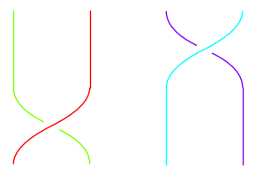
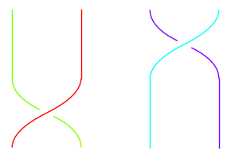
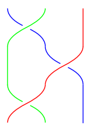

B.<a,b,c> = BraidGroup(4)
plot(a * c)
In Theorem 4.1 we saw that every cycle and hence every permutation can be written as a product of adjacent swaps: \((12), (23), (34), \dots, (n-1,n)\). Here we will identify some relations that hold among these generating elements.
Let us call \(\tau_i = (i, i+1)\) the swap of \(i\) and \(i + 1\).
We have \(\tau_i^2 = 1\) where \(1\) represents the identity permutation (no shuffling). This says that if we swap \(i\) and \(i + 1\) and then swap again, we get back to a sorted list.
From Exercise 3.1, we saw that in general \(\pi_1 \pi_2 \neq \pi_2 \pi_1\). Nonetheless, if we are swapping disjoint sets of pairs like \((12)\) followed by \((34)\) then there is no interaction between the swaps. So the order doesn’t matter: \((12)(34) = (34)(12)\). Specifically, \(\tau_i\) and \(\tau_j\) commute (\(\tau_i\tau_j = \tau_j\tau_i\)) provided \(i\) and \(j\) are at least \(2\) apart.
B.<a,b,c> = BraidGroup(4)
plot(a * c)
a * c == c * aTrueAt the top of Section 4.2 we saw that \((12)(23)(12) = (13)\). We also have \((23)(12)(23) = (13)\). Compare the following pictures.
B.<a,b> = BraidGroup(3)
plot(a * b * a)
plot(b * a * b)

We can see visually that the middle green strand is sliding from one side of the blue/red crossing to the other.
It turns out, every way to simplify or manipulate products of transpositions can be reduced to exactly these three rules:
The proof of this has two stages. One which we have already seen. First, you show that every permutation can be written as a product of transpositions of adjacent elements (Theorem 4.1). This shows that you can use \(\tau_1,\dots,\tau_n\) and these rules to write every element of \(S_n\). I.e. the number of objects generated by these rules is at least \(n!\).
The second step is showing that the number of objects generated by these rules is no more than \(n!\) so that it is exactly the same as \(S_n\). This requires more tools than we have available to us (i.e. group theory). A proof for those in-the-know may be found here for instance.
We will take it as a fact that these rules descrie \(S_n\) exactly.